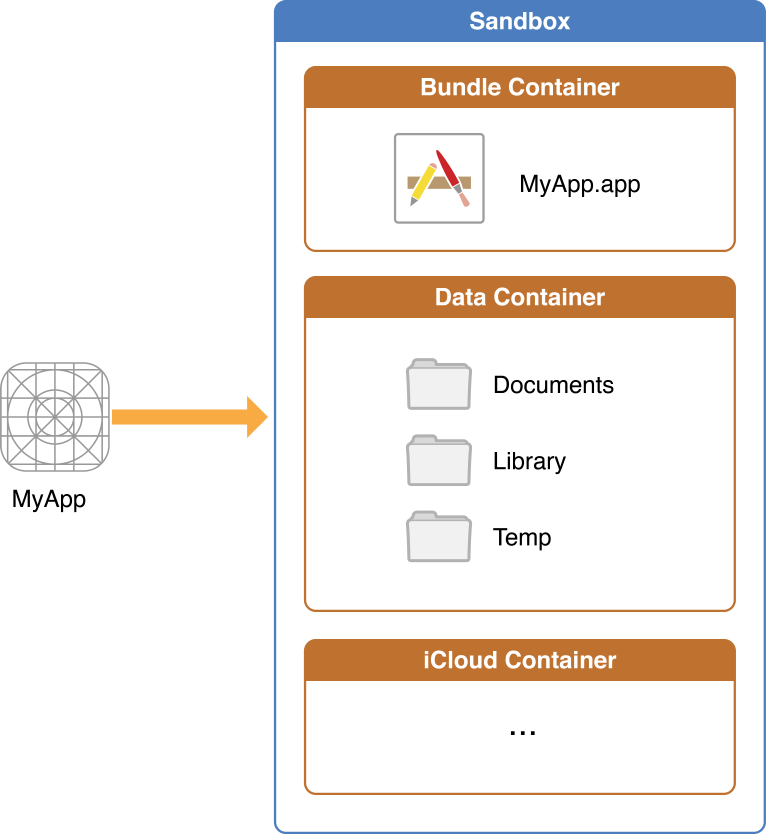

iOS App 数据持久化
数据的持久化就是让数据能够持久的保存，实现它的方法有两种：云端和本地。本文试着简单总结本地持久化的方法。
本地持久化其实就是将数据保存到闪存，那么我们应该用什么方法保存，又应该保存在哪呢？
文件系统基础
在OS X和iOS中，文件系统处理数据文件，应用程序和操作系统本身相关文件的持久存储。下面简要介绍下 iOS 文件系统的基础知识，以便我们更好的使用她。
iOS应用和文件系统的交互基本上仅限于它沙盒内目录。新应用安装过程中，安装程序为应用创建了数个容器。每个容器有个特定的角色。The bundle container holds the app’s bundle, whereas the data container holds data for both the application and the user. The data container is further divided into a number of directories that the app can use to sort and organize its data. The app may also request access to additional containers—for example, the iCloud container—at runtime.
这些容器构成了应用文件系统的基本面。下图是应用沙盒的示意图。

iOS应用常用的目录列表：
| Directory | Description |
|---|---|
| AppName.app | This is the app’s bundle |
| Documents/ | Use this directory to store user-generated content. |
| Documents/Inbox | Use this directory to access files that your app was asked to open by outside entities. |
| Library/ | This is the top-level directory for any files that are not user data files. |
| tmp/ | Use this directory to write temporary files that do not need to persist between launches of your app. |
数据的建议存储位置
限于篇幅，关于应用的数据应该放到哪，可以查阅File System Programming Guide > File System Basics > About the iOS File System > Where You Should Put Your App’s Files。
数据持久化的方法
- NSUserDefaults;
- Property Lists;
- Archive;
- 数据库;
- Core Data。
NSUserDefaults
NSUserDefaults类提供与默认系统交互的程序接口。默认系统允许应用去自定义它的行为来符合用户的偏好。所以它主要是用来存储些配置信息。 它支持的数据类型有：floats，doubles，integers，Booleans，URLs，NSData，NSString，NSNumber，NSDate，NSArray和NSDictionary。如果还想存储其他类型的对象，需要使用NSData对它们进行归档。
Property Lists
当我们需要持久化的数据量在几百KB内时，property list为我们提供了统一而方便的方法持久化数据。如果我们的对象全由NSDictionary, NSArray, NSString, NSDate, NSData, 或NSNumber类派生，我们可以创建property list。事实上，NSUserDefaults就是把数据保存在property list中。
Property list有三种存储方式：XML, binary format, “old-style” ASCII format inherited from OpenStep。old-style format的序列化API是只读的。
XML property list比binary格式的可移植性好，可以手动编辑，但是binary property lists兼容性好，需要的存储空间少，读写速度要优于XML property lists。通常来说，如果你的property list相对较小，XML property lists的优点会战胜它相对binary property lists的I/O速度，难兼容的缺点。如果你有大量数据，binary property lists, keyed archives，或自定义数据格式会是更好的解决方案。
Archive
Archives提供了一种把对象和值转成结构独立的字节流，它保留了对象与值，以及对象与对象的关系信息。
Cocoa archives可以持有Objective-c对象，标量，数组，结构体和字符串。它不能持有和平台相关的类型，例如union, void *, function pointers, 和long chains of pointers。
对象写入archive和从archive读出是使用coder对象。Coder对象是抽象类NSCoder具体子类的实例。它通过给对象发送NSCoding协议定义的encodeWithCoder: 和initWithCoder:方法分别写入或读出archiver。只有支持NSCoding协议的对象才能写入archiver。
数据库
iOS中有了以上数据持久化方法，我们为什么还需要数据库？
因为数据库可以提供对数据更加高级的操作，这是其他方式不能提供的。
目前在iOS App开发中，SQLite是个不错的选择。
SQLite
SQLite is an in-process library that implements a self-contained, serverless, zero-configuration, transactional SQL database engine.
SQLite在众多数据库中脱颖而出，目前是个不错的选择，但由于它是C接口，操作略显繁琐，就有了很多对它的封装，FMDB是其中的佼佼者。
Core Data
Core Data是Apple为我们提供的一种持久化方法，比较强大也比较复杂。
Reference
File System Programming Guide
Property List Programming Guide
Archives and Serializations Programming Guide
对比iOS中的四种数据存储
IOS开发系列—Objective-C之Foundation框架
iOS开发系列–数据存取